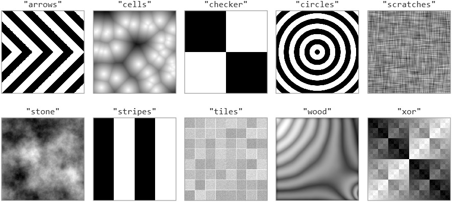
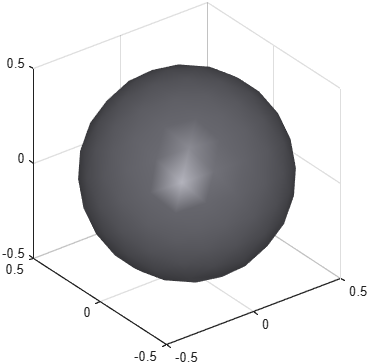

Shape superclass
Abstract class phx.base.Shape
phx.base.Shape is the abstract superclass for all shapes that define
the visual and collision geometry of a phx.Body. Concrete shapes in the
phx.shape.* package derive from this class and implement how they are
drawn and how their mass and moments of inertia are computed. The class provides the appearance
parameters shared by all shapes — surface color, material, style and an optional texture.
You normally do not instantiate this class directly; you assign a concrete shape to a body's
Shape property, either as an object or as a cell array. The properties
and methods documented here are available on every phx.shape.* object
and are settable as Name,Value pairs in any shape constructor.
| Property | Type / Default | Description |
|---|---|---|
| Color | [NaN NaN NaN] | Surface color (RGB). NaN assigns the next color from the cyclic palette. |
| Material | "plastic" | Surface material: "unlit", "matte", "plastic", "glossy" or "metal". |
| Style | "smooth" | Surface style: "smooth", "edged", "flat" or "wireframe". |
| ForcePatch | false | Force the use of a patch object for drawing instead of the fast world primitive. |
| Texture | string | matrix | Texture image. Accepts a path to an image file (loaded with its alpha, if present), the name of a built-in texture (matched case-insensitively), or an image matrix laid out like an image file. An M×N×3 matrix is an RGB image, uint8 or floating-point with values 0–1. An M×N matrix holds gray levels mapped through TextureColormap: uint8 values are used as they are (0 black, 255 white), data of any other class are scaled to their full range. An empty string removes the texture. |
| TextureColormap | N×3 matrix | Colormap of an M×N texture matrix: uint8 values 0–255, or the range of other data, span the whole colormap. The default empty colormap gives shades of gray, ready to be tinted with Color through TextureBlend. It has no effect on RGB images, image files and built-in textures. |
| TextureBlend | 1 | Texture blending ratio (0–1) between the texture and the surface color: 1 shows the texture as it is, 0 the plain color. The alpha channel of the texture is kept. |
| TextureTransform | string array | Operations on the texture image, applied from left to right before TextureBlend:
"rot90", "rot180" and "rot270" rotate it counterclockwise, as rot90 does;
"fliplr" and "flipud" mirror it left to right and upside down;
"grayscale" keeps only its luma, as rgb2gray does;
"invert" makes a negative of its colors; and "opaque" drops its alpha channel.
The rotations and mirrors apply to the whole image, so all faces of a shape turn together. An empty array (the default) leaves the image as it is. |
ForcePatch is
true – the shape falls back to a
patch object, which ignores the texture: nothing fails, but the
surface simply shows its Color.
u runs along its columns from left to right and
v along its rows from top to bottom. The shapes lay the image out
unmirrored, seen from outside: a Box face reads upright with the
image top towards +z on the sides and towards +y on the top face, and on the revolved and extruded
shapes the image top lies at the end of the profile or spine.
Rock and a Mesh without texture
coordinates project the image onto each face along the axis closest to its normal.
Terrain lays the image out like its
Height matrix instead.
| Function | Description |
|---|---|
| nextColor | Assign the next color from the cyclic color order to the shape. |
| resetColorOrder | Static. Reset the counter so nextColor starts again from the first color. |
Each built-in texture is a static function of the class that generates a uint8
grayscale image. Setting Texture to its name uses the default output; calling the
function directly sets the size and look of the image, and its output can be passed as
Texture as it is:
resolution is the image size as [width height] in pixels
(default [512 512]). The further arguments are optional too; a
seed selects another variant of a random pattern and leaves the global random number
generator untouched.
| Function | Further arguments (default) | Image |
|---|---|---|
| arrows | width (64) | Black and white chevrons pointing right, each band width pixels wide. The height must be even. |
| cells | density (40), seed (0) | density irregular cells, light in their centers and darkening towards their borders. |
| checker | count ([2 2]) | Black and white checkerboard of count squares, [across down]. |
| circles | width (32) | Black and white concentric rings with smooth edges, each width pixels wide. |
| scratches | seed (0) | Fine scratches along both image axes; tiles seamlessly. |
| stone | smoothness (1.8), seed (0) | Soft cloudy noise; higher smoothness gives larger, softer blotches. Tiles seamlessly. |
| stripes | width (128) | Black and white vertical stripes, each width pixels wide. |
| tiles | count ([8 8]), base (0.8), seed (0) | Light square tiles in slightly different shades, count as [across down], separated by joints of lightness base (0–1). The image size must be divisible by count. |
| wood | rings (7), seed (0) | Wood grain of rings growth rings bending around a knot, with slightly darker edges that outline the faces of a box. |
| xor | – | Squares nested at all scales, like a recursive checkerboard. |

"metal" was renamed to
"scratches". The old name still works with a warning and will be removed in a
future release.
| Method | Role |
|---|---|
| drawTo(obj,target) | Draw the shape into the target axes or hgtransform. |
| [mass,inertia] = computeMass(obj) | Compute the mass and principal moments of inertia of the shape. |
The phx.shape.* package provides the ready-to-use geometry a body
can wear, including:
Box, Sphere,
Cylinder, Tube,
Cone, Capsule,
Mesh,
Extrusion, Revolution,
Rock and Terrain.
clf; view(3); axis equal; grid on; camlight headlight; % As a cell array: shape name followed by its name-value pairs b1 = phx.Body("Shape", {"Box", "Size", [2 1 1], "Color", [0.4 0.6 1]}); % As a shape object b2 = phx.Body("Shape", phx.shape.Sphere("Diameter", 0.5, "Density", 50));
clf; view(3); axis equal; grid on; camlight headlight; b = phx.Body("Shape", {"Sphere", "Diameter", 1, ... "Material", "metal", "Style", "smooth", "Color", [0.7 0.7 0.75]});

Draw the bodies into the axes of a phx.extra.Viewer, otherwise the textures are not rendered:
[~, ax] = phx.extra.Viewer("clear"); crate = phx.shape.Box("Size", 2, "Texture", "wood"); % built-in texture earth = phx.shape.Sphere("Diameter", 2, "Texture", "earth.jpg"); % image file phx.Body(ax, "Position", [-2 0 0], "Shape", crate); phx.Body(ax, "Position", [ 2 0 0], "Shape", earth);
Use TextureBlend below 1 to tint a texture with the
Color of the shape – a blend of 0.2–0.5 over
"checker" is a cheap way to make a colored body read as a solid
object while it rotates.
A matrix of scalar data becomes a grayscale texture, which TextureBlend
tints with the color of the shape; with TextureColormap the data are
mapped to colors instead:
[~, ax] = phx.extra.Viewer("clear"); slab = phx.shape.Box("Size", [2 2 0.5], "Color", [0.9 0.5 0.2], ... "Texture", peaks(200), "TextureBlend", 0.6); % gray pattern, tinted ball = phx.shape.Sphere("Diameter", 1, "Texture", [1; 0], ... "TextureColormap", [0.35 0.45 1; 1 0.35 0.3]); % red top, blue bottom phx.Body(ax, "Position", [-2 0 0], "Shape", slab); phx.Body(ax, "Position", [ 2 0 0], "Shape", ball);
Pass uint8 data to keep its gray levels instead of stretching them to the full
range – uint8(200 + 40*rand(64)) gives a light, low-contrast grain.
Call the function of a built-in texture to change its parameters – here a floor of smaller tiles and a smoother, wider stone pattern for a long slab:
[~, ax] = phx.extra.Viewer("clear"); floor = phx.shape.Box("Size", [8 8 0.2], "Texture", phx.base.Shape.tiles([512 512], [16 16])); slab = phx.shape.Box("Size", [4 1 0.5], "Color", [0.6 0.6 0.65], "TextureBlend", 0.5, ... "Texture", phx.base.Shape.stone([1024 256], 2.5)); phx.Body(ax, "Type", "static", "Shape", floor); phx.Body(ax, "Position", [0 0 0.35], "Shape", slab);
TextureTransform turns the image a quarter turn on every face of the first box, and on
the second one makes a mirrored grayscale image of a colored photo, so that the blend tints it with the shape's own
color:
plank = phx.shape.Box("Size", [2 0.3 0.1], "Texture", "wood", "TextureTransform", "rot90"); panel = phx.shape.Box("Size", 1, "Texture", "photo.jpg", "Color", [0.2 0.4 0.9], ... "TextureTransform", ["grayscale" "fliplr"], "TextureBlend", 0.6);
A PNG image with an alpha channel switches the drawing to transparency, which turns antialiasing
off. Add "opaque" when the image carries an alpha channel it does not
need.